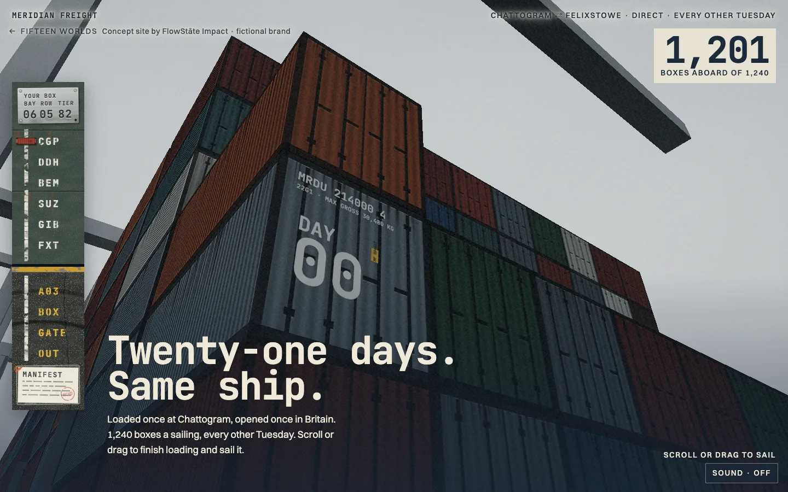
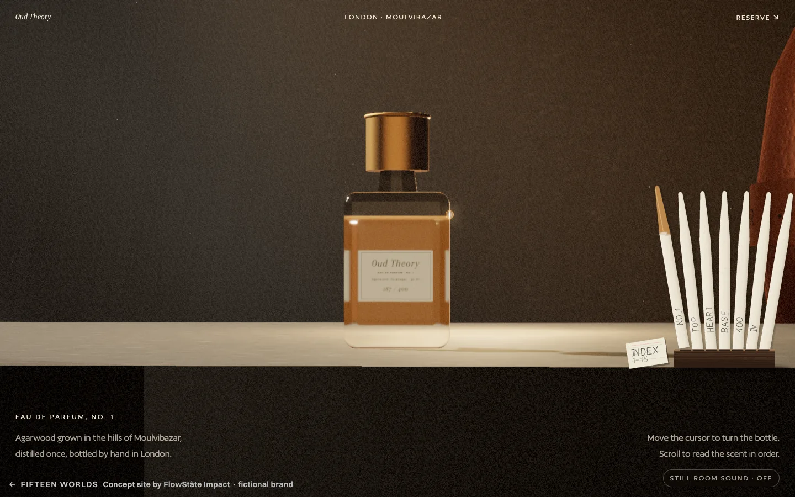
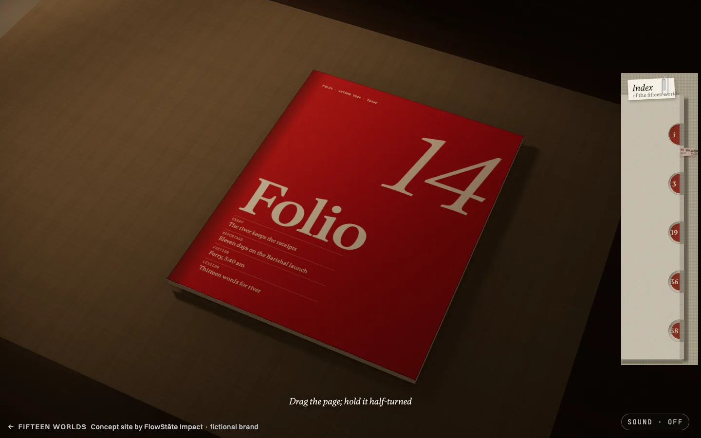
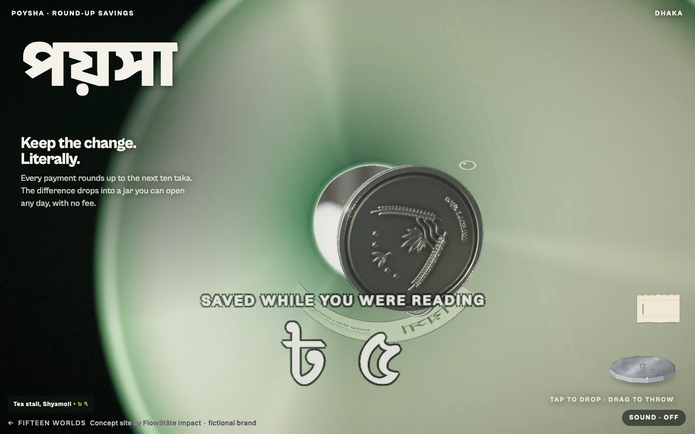
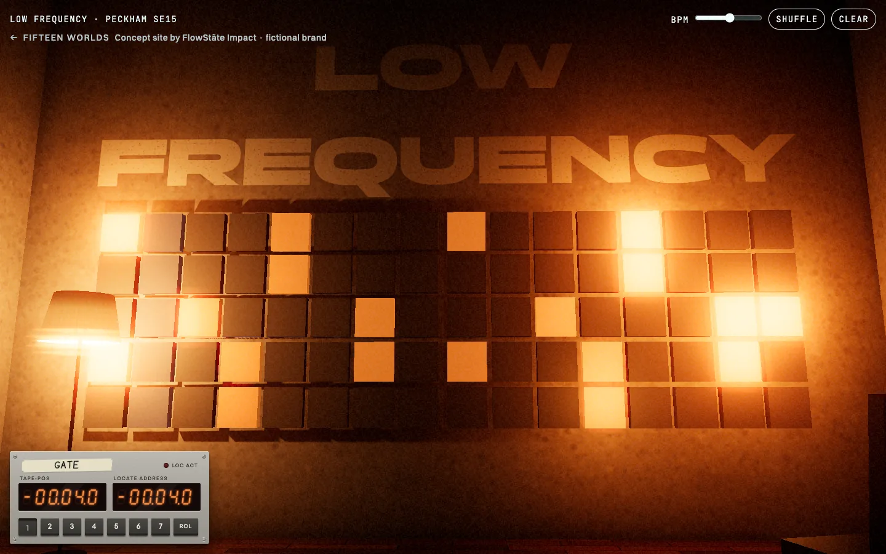
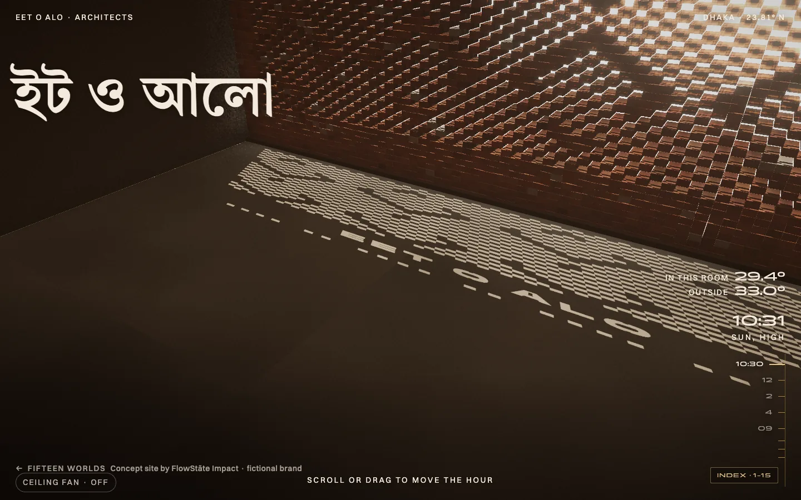

BorshaTea house · DhakaWipe the rain off the glass.
BorshaTea house · DhakaWipe the rain off the glass.

MeridianFreight line · Chattogram to FelixstoweSail thirty days across a hand-drawn sea chart.
Oud TheoryPerfumer · LondonA glass bottle made entirely of maths. NoukaElectric ferries · BurigangaThe boat is silent. You only see its wake.
NoukaElectric ferries · BurigangaThe boat is silent. You only see its wake.

FolioLiterary quarterlyPages you actually turn. Dark RoomGallery · ShoreditchYou hold the only light in the room.
Dark RoomGallery · ShoreditchYou hold the only light in the room.

PoyshaSavings app · DhakaCoins with real weight. Throw one. BadabonForest lodge · SundarbansSomething in the roots is watching you.
BadabonForest lodge · SundarbansSomething in the roots is watching you.

Low FrequencyRecording rooms · PeckhamThe whole page is an instrument. ElevenResidences · Gulshan LakeTwenty-four hours in one scroll.
ElevenResidences · Gulshan LakeTwenty-four hours in one scroll.
 TaantJamdani weaving · RupganjScroll is the shuttle. The cloth weaves itself.
TaantJamdani weaving · RupganjScroll is the shuttle. The cloth weaves itself.
 SonarGoldsmith · Hatton GardenSixteen thousand grains of gold, and your hand.
SonarGoldsmith · Hatton GardenSixteen thousand grains of gold, and your hand.

Eet o AloArchitects · DhakaWalk through a brick wall while the sun crosses a day. HaldiSkincare · LondonA serum you can touch and pour.
HaldiSkincare · LondonA serum you can touch and pour.
 Gate WeaveFilm house · Dhaka and LondonThe page is a projector. Scroll to crank it.
Gate WeaveFilm house · Dhaka and LondonThe page is a projector. Scroll to crank it.
Yours next?
Ask for the audit
£100 in the UK, no charge in Bangladesh, for the first ten founders in each country, until 31 December 2026.After the first ten in your country, or after 2026, the list price: £500 in the UK, 5,000 taka in Bangladesh.